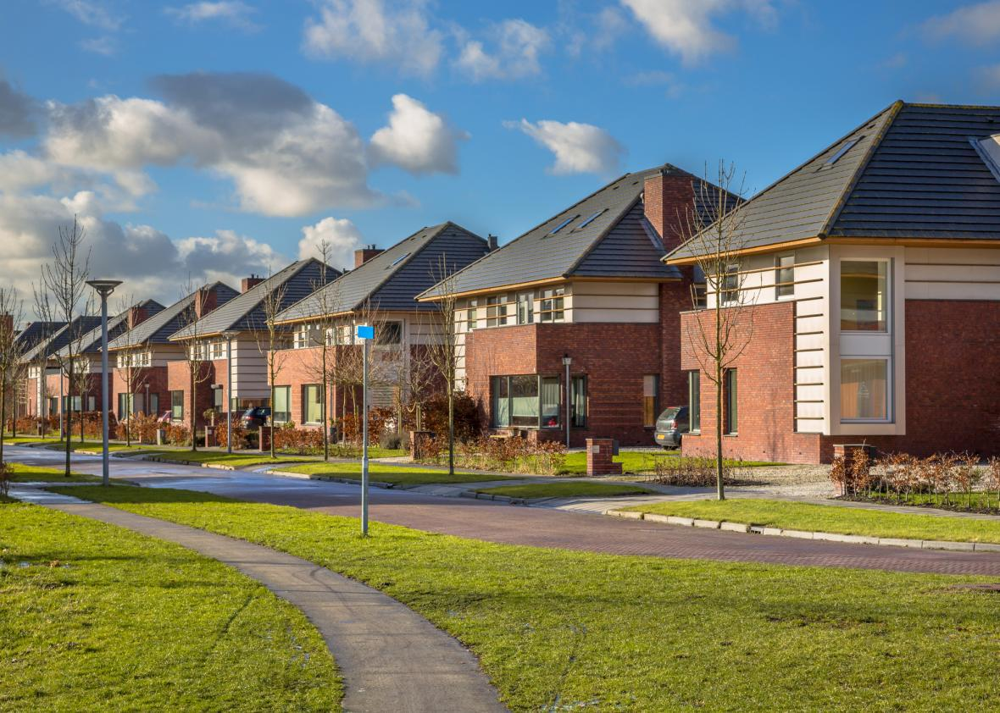

Always getting the information you need!

7 Day Forcast

Famous Idaho Potato Marathon set to run through Boise
Saturday morning, May 18th, kicks off the YMCA's annual Famous Idaho Potato Marathon. The marathon is actually four races: A full marathon, half marathon as well as 10k and 5k races. The marathons both start at 7:00 AM at Lucky Peak State Park and finish in the parking lot of the Albertsons Headquarters on Parkcenter Blvd West. To continue reading, click here